Research Interests
Ongoing research topics of the Geometry-informed Data Analysis Group. Each figure is computed on a small synthetic example. Students who would like to write a thesis on one of these topics are welcome to get in touch.
Geometry-informed TDA
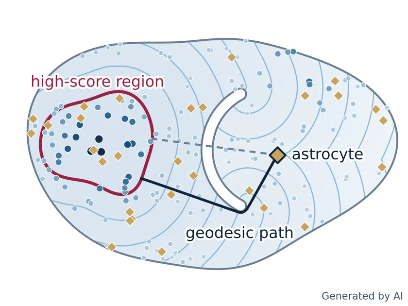
Co-location of glial cells in brain tissue
Spatial transcriptomics gives every cell in a brain slice a position, a type and state scores, some linked to disease. Disease-associated oligodendrocytes and astrocytes are tested for sitting closer together in diseased than in healthy tissue. Persistent homology of a score density selects the high-score region, fast marching computes eikonal distances to it inside the tissue, and the result is compared with Ripley's cross K-function.
With Seol Ah Park, Inkyung Jung and Hyunho Yang.
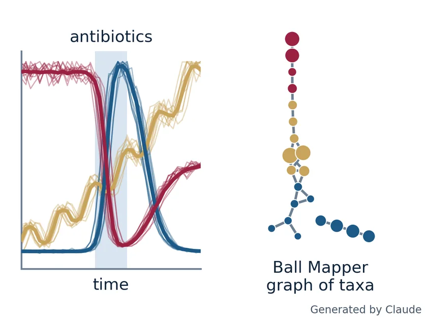
Co-abundance modules in gut microbiome time series
After antibiotics or a change of diet, groups of gut bacteria often rise or fall together. In public gut time series, non-negative matrix factorization groups the taxa into modules, and Ball Mapper turns their time profiles into a graph. Modules that stay together across many ranks and ball radii are candidates for bacteria that respond to the same event.
With Keunsu Kim, Junwon You, Seol Ah Park, Yeonsu Oh and Ho-Seong Cho.
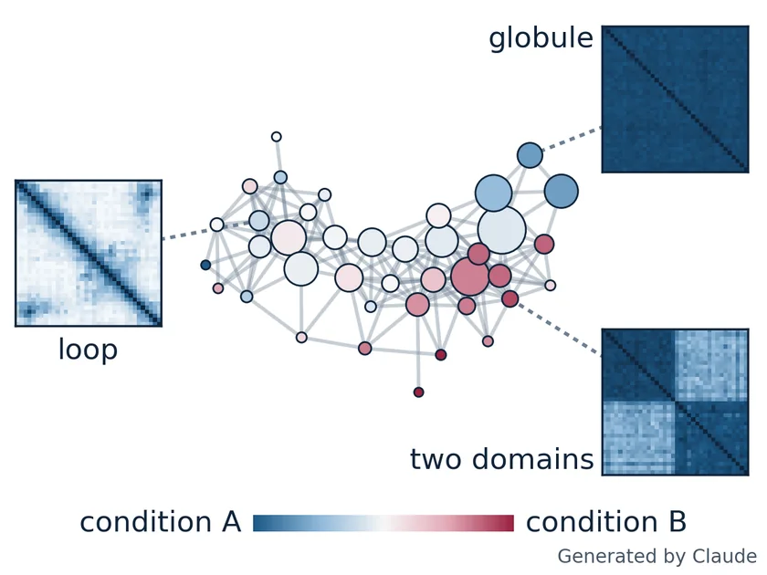
DNA folding in single cells
ORCA microscopy traces DNA in single cells as 3‑D curves of a few dozen points, often with many of them missing. Each trace is turned into rotation-free numbers from its internal distances, and Mapper and Ball Mapper graphs summarize thousands of traces as a network of typical folds. Permutation tests ask which folds become more or less common when a CRISPR-based protein only binds the DNA or also marks it for silencing.
With Minhee Park and Dariya Issagulova.
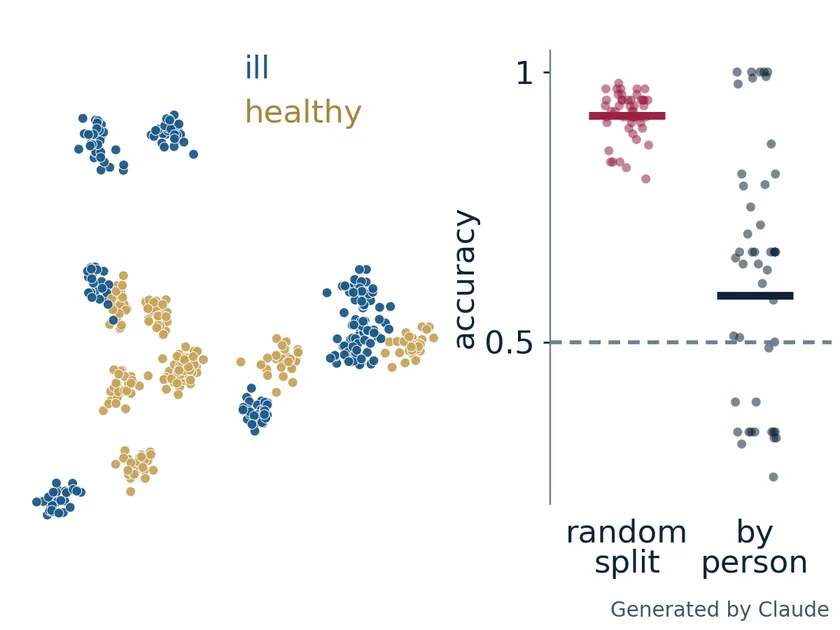
Disease classification from surface-enhanced Raman spectra
Surface-enhanced Raman spectra (SERS) of body fluids are measured many times per person, and the intensity jumps between nanoparticle hotspots. When one person's repeats fall in both the training and the test set, a classifier learns the person instead of the disease. Spectrum-level and person-grouped splits are compared, using PCA, kernel-density modes and Ball Mapper, to measure how much this leakage inflates accuracy.
With Tae-Young Jeong, Jin-Woo Oh (JENLiFE), Seol Ah Park and Yeon Sik Jung.
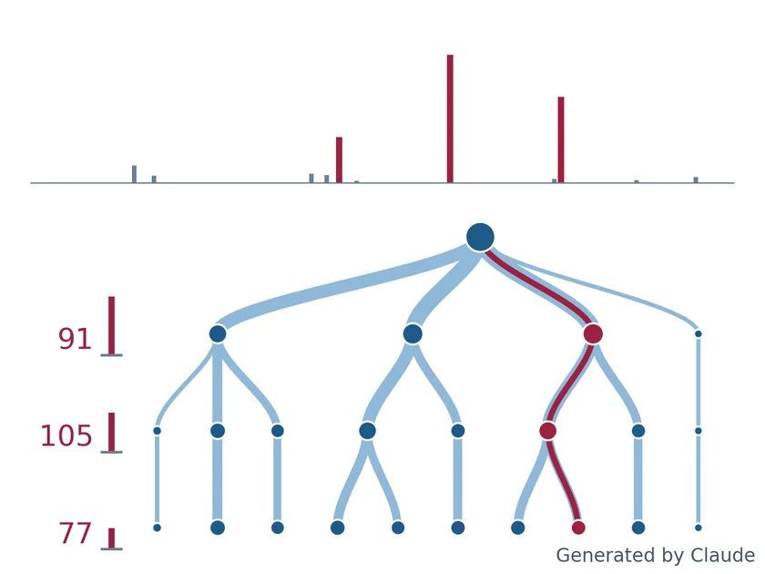
Trie indexing of GC×GC–MS food spectra
GC×GC–MS records hundreds of thousands of mass spectra per sample; the wine, coffee and honey data exceed 800 GB. Each spectrum is read as a word of fragment masses, from most to least intense, and all spectra form one trie, so spectra with equal leading masses share a branch. The trie is used to ask which spectra, read as chemical words, two samples share and which occur in only one.
With Nemanja Koljančić and Ivan Špánik.
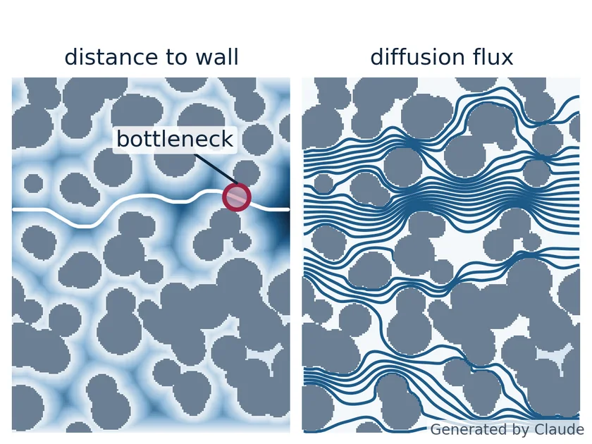
Pore topology and ion transport in electrodes
Two porous electrodes with the same porosity can transport ions very differently, because of bottlenecks and dead-end pores. For supercapacitor electrodes, persistent homology of the distance-to-wall map, the critical radius and the persistent Laplacian are compared with the tortuosity from a finite-volume diffusion solver. Synthetic 2‑D and 3‑D structures test which numbers predict transport better than porosity.
With Changyong Yim and Jaebeen Ahn.
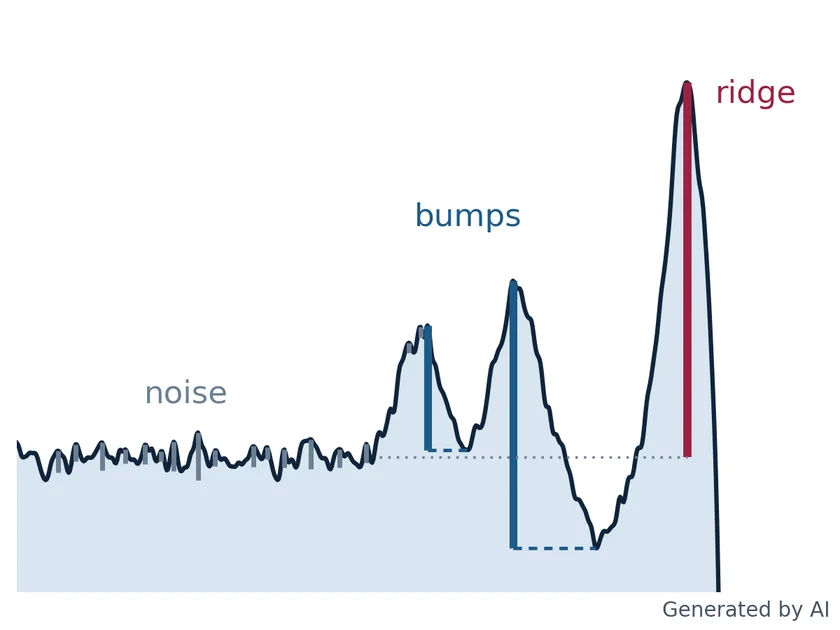
Edge profiles in slot-die coating
In slot-die coating of battery electrodes, the film edge often grows a ridge, a dip or several bumps, and the edge strip becomes waste. One-dimensional persistent homology gives every hill of an edge profile together with its prominence. These features are matched to shape labels and related to dimensionless process numbers, to find which settings give a clean edge.
With Jaewook Nam and Jisoo Song.
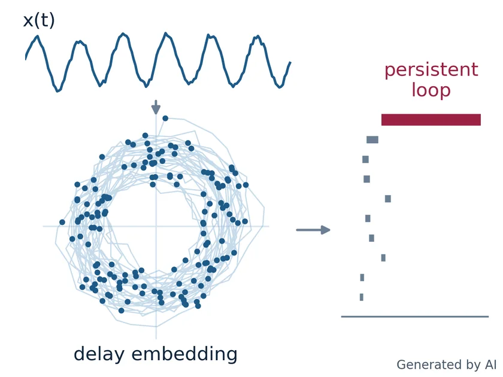
Ear-EEG signals during mental tasks
A brain-computer interface with eight electrodes behind the ears is meant to separate mental arithmetic from silent singing. Takens' delay embedding turns the signals into point clouds, and persistent homology measures their loops. Phase-randomized surrogates, which keep the power spectrum, test whether this shape carries information about the task beyond the spectrum.
With Hyeonseong Bang, Chang-Hee Han and Han-Jeong Hwang.
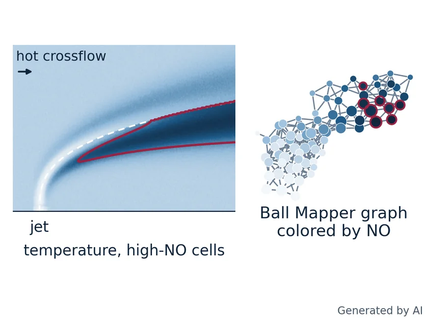
NO formation in a jet-in-crossflow flame
Staged gas-turbine combustors inject a premixed jet into the hot exhaust of a first flame to keep NO low. Three-dimensional simulations give every cell of the flame a temperature, two fluid ages, a mixedness, species, a flame index and a vorticity. After one shared quantile map of these features, Ball Mapper summarizes millions of cells as a graph colored by NO, and graphs of different operating cases are compared to find which local conditions produce NO.
With Dong-hyuk Shin and Jaewon Yoon.
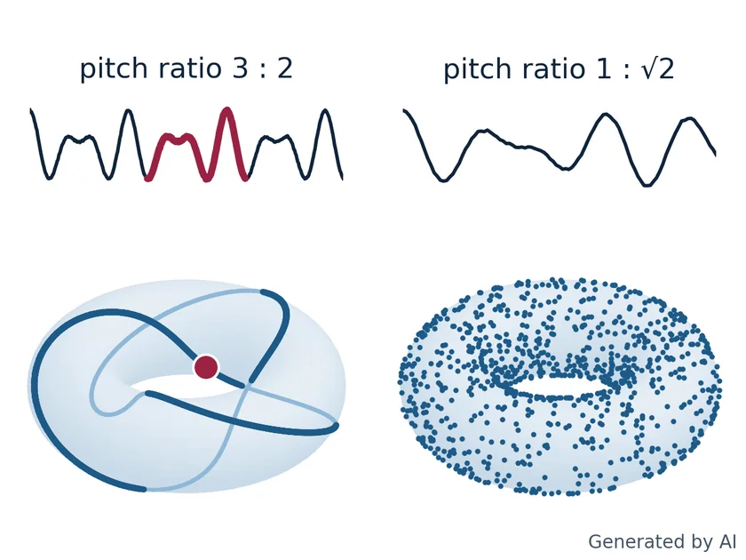
Sound of rolling steel balls
Recordings of steel balls rolling down a slide reveal whether a surface is standard, coated or damaged. Sliding-window embedding turns a sound clip into a point cloud: a periodic sound traces a loop, two incommensurate tones fill a torus, and persistent homology measures these shapes. Topological and spectrogram-based classifiers are compared when noise is added or the setup changes.
With Aruzhan Almazova.
Segmentation and shape of cells
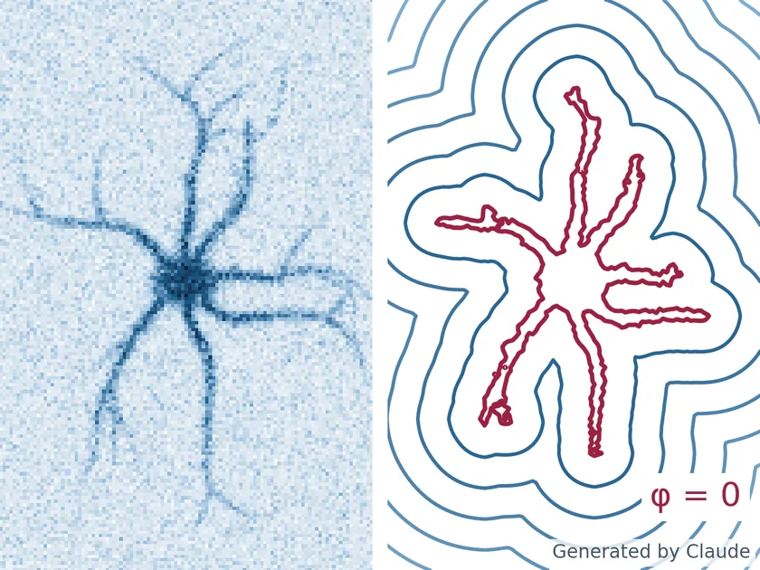
Level-set and neural-network segmentation of microglia
Microglia, the brain's immune cells, change shape after injury and in disease, and their thin, faint branches are hard to segment. The Chan-Vese level-set model is combined with a U-Net trained on the Chan-Vese energy as a label-free loss, after TGV denoising and ridge filtering. Results are compared with the pure variational model and with Cellpose.
With Seol Ah Park, Heeyoung Chae and Sandra Siegert.
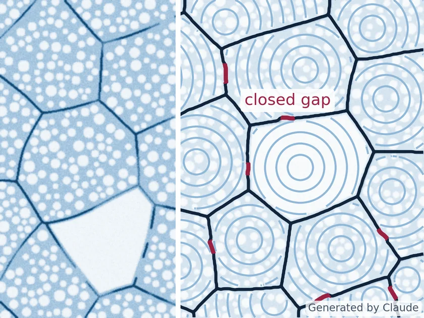
Cell segmentation in brown fat tissue
Brown fat cells shift from many small lipid droplets toward one large droplet when the tissue stays warm and idle. Measuring this cell by cell requires segmenting tightly packed cells whose membranes are faint and often broken. Level-set active contours and subjective surfaces, which close gaps in broken outlines, are combined with Cellpose.
With Yun Hak Kim, Dong Min Lim and Seol Ah Park.
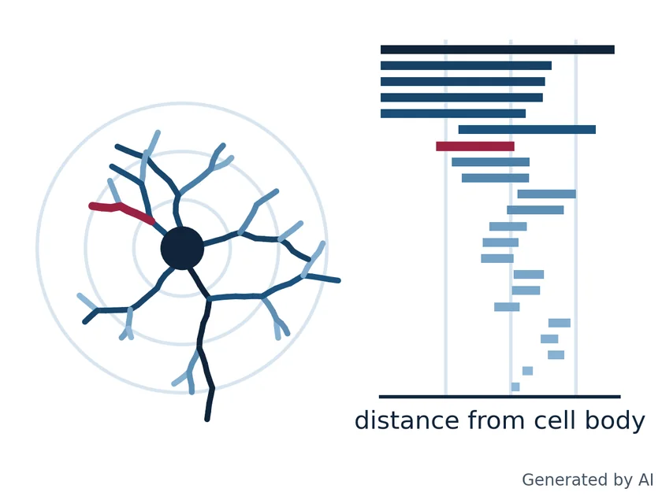
Topology of microglia branching in the retina
Retinal microglia change their branching when photoreceptors degenerate or the optic nerve is injured. The Topological Morphology Descriptor turns each 3‑D cell skeleton into a persistence barcode with one bar per branch. Barcodes, persistence images and Betti curves are compared with classical morphometrics such as Sholl analysis, to see how early they detect degeneration.
With Sandra Siegert, Mohammadhossein Faramarzi and Seol Ah Park.
PDEs and scientific machine learning
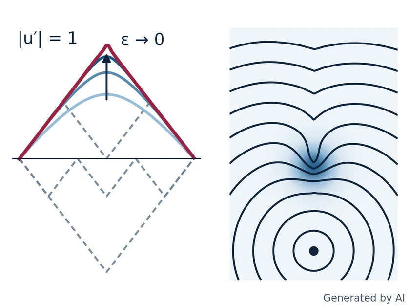
Neural-network solvers for nonlinear PDEs
Neural networks can solve PDEs by training on the equation itself instead of labeled data. For the eikonal equation, a plain residual loss often converges to a wrong solution, because the viscosity solution is not the only almost-everywhere solution. Losses built from vanishing viscosity, augmented Lagrangian forms or stochastic representations recover it, and are compared with finite-volume and finite-element solvers.
With Yesom Park, Hwijae Son, Sung Woong Cho and Damir Salikhov.
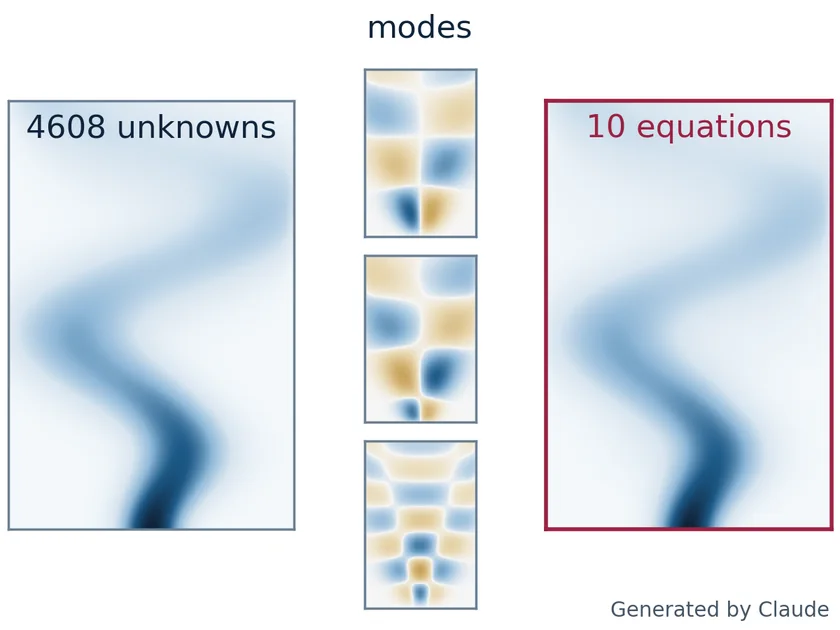
Learned reduced-order models for reacting flows
Detailed simulations of reacting flows, such as char combustion in fluidized beds, are too slow for design studies. A reduced-order model replaces them by a few ordinary differential equations for the amplitudes of the dominant POD modes, fitted by Operator Inference or by physics-informed training. Test problems show when adding physics to the loss improves the forecast.
With Dongjin Lee and Hyunjung Woo.